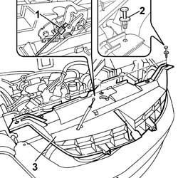

7055A42 FRONT GRILLE - R+R
- Path
- Procedures > 70 FITTINGS > 7055 MOULDINGS ON PROTECTIONS > 7055A EXTERIOR MOULDINGS > 7055A42 FRONT GRILLE - R+R
- Kind
- repair procedure (removal / refitting; the operation number is the code)
- Applies to
- all engines; all production periods
- Interactive page
- https://sloeber94.github.io/elrnDB-fUlss/en/#/179007927
Applies to: all engines; all production periods
 Removing
Removing
 Refitting
Refitting1. Disconnect the lock rod using a suitable tool.
2. Remove the upper fixing buttons using the special tool.
 | Description | Code | Function |
|---|---|---|---|
. | Knife | 1.878.077.000 | Remove the fastening buttons |
- Release the lower retainers.
3. Remove the front bumper upper grille.

Applies to: all engines; all production periods
Refitting
Removing- Position the front bumper upper grille and secure the lower retainers.
- Position the upper fastening buttons.
- Connect the lock rod.